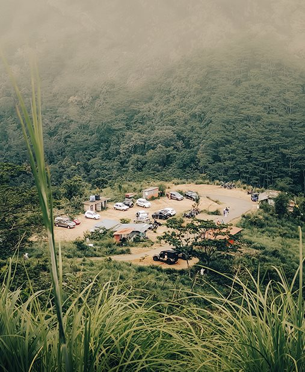

Nature / THE PERSONAL ARCHIVE
A place to pause
A clearing in a green valley seen through tall grass.
- Place
- Location not published
- Camera
- Camera details not recorded
- Archive
- eyesofnydh personal collection

Nature / THE PERSONAL ARCHIVE
A clearing in a green valley seen through tall grass.
KEEP LOOKING